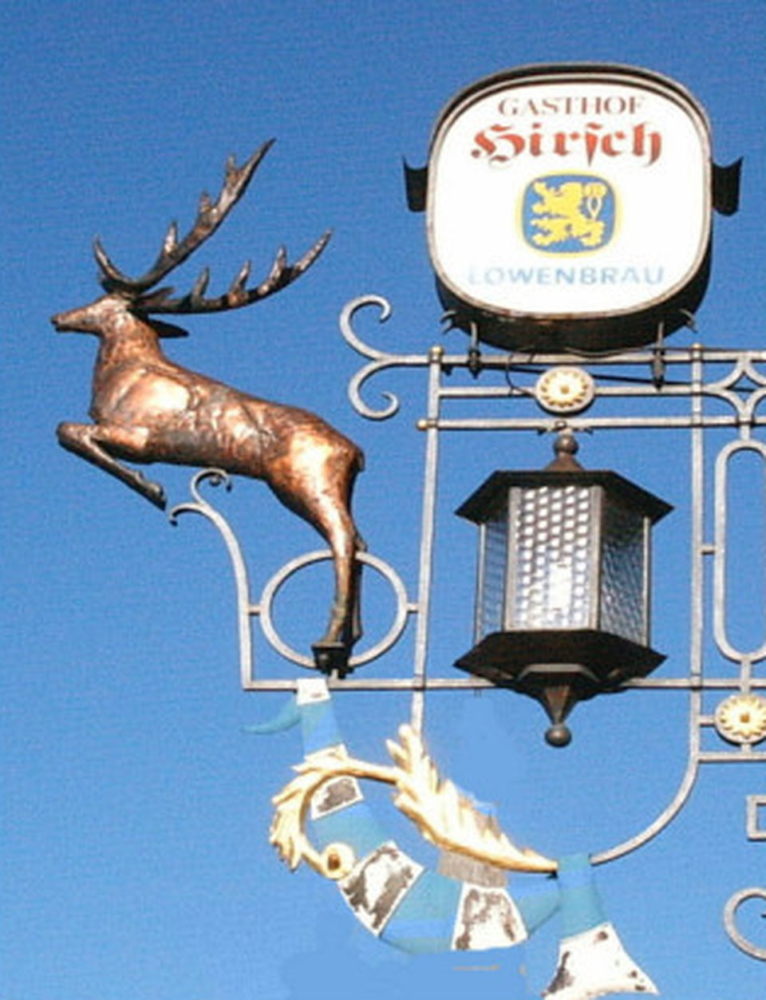

Gasthof
Hirsch
Gut bürgerliche Küche · Mittwoch bis Sonntag
Mittwoch bis Sonntag geöffnet

Aus der Küche
4,7von 5 Sternen bei rund 240 Rezensionen auf Google, Stand 5. Oktober 2026.
«Gut bürgerliches Essen» – so steht es bei uns, und mehr Worte machen wir darum nicht. Was auf den Teller kommt, beschreiben die Gäste.
-
Hirschgulasch mit Spätzle
«Wir haben hier das beste Hirschgulasch seit langem gegessen. Absolut zart, einer tollen Sauce und mit herlichen, selbstgemachten Spätzle.»
-
Zwiebelrostbraten
«Super Essen, insbesondere der Zwiebelrostbraten.»
-
Currywurst mit Pommes
«Beste Curry Wurst mit Pommes in der Gegend. Beilagen Salat super ich liebe ihn»
-
Und die Portionen
«Immer wieder prima, und riesige Portionen.»
Hinweis zur Vorschau: Hier zeigt die fertige Website die aktuelle Karte – Tagesgerichte, Saisonkarte, Getränke. Das Haus hat online bisher keine Speisekarte veröffentlicht, darum bleibt der Platz bewusst frei.
Familienfeier oder größere Runde? Am besten kurz anrufen: 08381 7601
Öffnungszeiten
Montag und Dienstag Ruhetag
- Montag
- Ruhetag
- Dienstag
- Ruhetag
- Mittwoch
- 9:30–14:00 und 17:30–22:00
- Donnerstag
- 9:30–14:00
- Freitag
- 9:30–14:00 und 17:30–24:00
- Samstag
- 9:30–14:00 und 17:30–24:00
- Sonntag
- 9:30–14:00
Oder telefonisch: 08381 7601
Das Haus
Der Hirsch steht in der Mitte von Heimenkirch: ein dunkles Schindelhaus mit grünen Fensterläden, am Giebel das schmiedeeiserne Schild mit dem kupfernen Hirsch. Familie Gaul führt hier ein Traditions-Gasthaus mit gut bürgerlicher Küche, Bierterrasse und einfachen, originellen Gästezimmern.
«Das Essen ist gut bürgerlich, mit reichhaltigen Portionen. Das Ambiente ist urig und rustikal. Super nette Inhaber. Wir kommen immer wieder gern.»
«Wir kommen seit Jahren in dieses Lokal, urig voller Herzlichkeit!! Als die Kinder noch klein waren und nicht immer leise, kein Problem.»
«Gut bürgerliche Küche, mit dem Scharm einer alt würdigen Dorfwirtschaft. Super.»
Alle Rezensionen auf Google lesen · Zitate aus Google-Rezensionen, Stand 5. Oktober 2026
Rund um Heimenkirch
- Meckatzer Löwenbräu
- Die Brauerei ist als Familienbetrieb in Heimenkirch verwurzelt. Brauereibesichtigungen gibt es im Ortsteil Meckatz.
- Wandern und Radfahren
- Zahlreiche Wanderwege führen durch die 20 Ortsteile mit ihren Bauernhöfen. Im Sommer: Freibad und Tennisplätze.
- Im Winter
- Gespurte Langlaufloipen, Rodeln, Eisstockschießen und Winterwanderungen.
- Sehenswert
- Schloss Syrgenstein, die Pfarrkirche St. Margaretha, die Heimatstube und vier Kapellen in den Ortsteilen.
Angaben: Markt Heimenkirch und Gastgeberverzeichnis Westallgäu.
Übernachten
«Super nett und zuvorkommend. Spitzen Frühstück und günstiger Preis.»
Im Haus gibt es einfache, originelle Einzel- und Doppelzimmer – für eine Nacht auf der Durchreise oder ein paar Tage im Westallgäu. Morgens gibt es ein reichhaltiges Frühstück.
Hinweis zur Vorschau: Zimmerzahl, Ausstattung, aktuelle Preise und Fotos der Zimmer ergänzt das Haus. Bis dahin läuft die Anfrage ohne Preisangabe – den Preis nennt Familie Gaul mit der Antwort.
Anfahrt
Gasthof HirschLindauer Straße 188178 Heimenkirch 08381 7601 info@gasthaushirsch-heimenkirch.deDer Hirsch liegt in der Ortsmitte von Heimenkirch im Landkreis Lindau, im bayerischen Westallgäu. Sie erkennen das Haus an der dunklen Schindelfassade und am Schild mit dem Hirsch.
Die Karte wird von OpenStreetMap geladen. Dabei wird Ihre IP-Adresse an die Server der OpenStreetMap Foundation übertragen.
Mehr in der DatenschutzerklärungRoute planen · Koordinaten: 47.62948, 9.90274